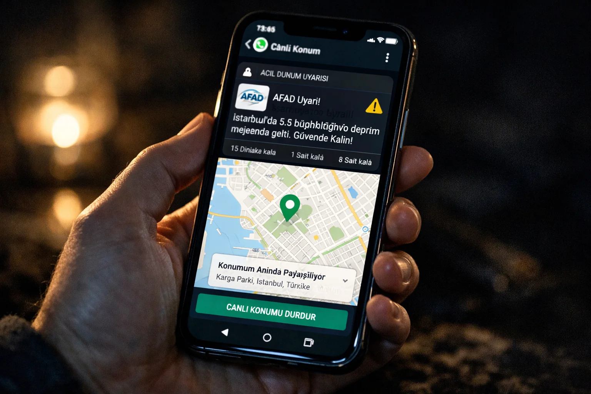

Deprem ve Cep Telefonu: Doğrular ve Yanlışlar
Deprem olunca herkes ailesini aramaya çalışır. Ama işte tam burada en büyük yanlışları yapıyoruz. Deprem sonrası cep telefonu kullanımı hakkında bilmeniz gerekenler.
Arama Yerine SMS Kullanın
Deprem sonrası baz istasyonları aşırı yüklenir — aynı anda 100.000+ kişi arama yapmaya çalışır. Arama %90 başarısız olur ve şebekeyi daha da tıkar. SMS ise geçici "kuyruk sistemi" ile sırayla gönderilir, başarı oranı çok yüksektir. 2023 Kahramanmaraş'ta SMS gidişatı %70, arama %15 başarılıydı. Önce SMS atın, sonra arayın.
Mesajlaşma Uygulamaları Doğru Mu?
WhatsApp, Telegram, Signal gibi internet tabanlı uygulamalar — mobil veri çalışıyorsa — SMS'ten daha güvenilir. WhatsApp konum paylaşımı özellikle enkaz altında kalanlar için hayat kurtardı 2023'te. Canlı konum özelliğini aktif edin, aileniz sizin yerinizi gerçek zamanlı görsün.
Batarya Ekonomisi
Deprem sonrası elektriksiz 48-72 saat geçirebilirsiniz. Bataryanızı koruyun: 1. Uçak modunu aktif tutun — sadece mesaj atarken açın. 2. Ekran parlaklığını minimuma al. 3. Sosyal medya, YouTube, oyun kapalı. 4. Bildirimleri kapatın. Bu önlemlerle 48+ saat batarya dayanabilir.
Güç Bankası Şart
Deprem çantasında minimum 20.000 mAh güç bankası olsun. Cep telefonu 3-4 kez tam şarj edebilecek kapasite. Solar güç bankası ek bonus — elektriksiz bölgede güneş varsa işe yarar.
Baz İstasyonu Çökmesi Durumu
Büyük depremlerde baz istasyonlarının %30-50'si çökebilir (elektrik kesintisi, yapı hasarı, kablo kopması). Böyle durumda Bluetooth Mesh networkler (Bridgefy gibi uygulamalar) internetsiz mesaj gönderir — 100 metre mesafede olan diğer telefonlara atlayarak uzağa iletilir. 2023'te enkaz altında kalanlar bu teknikle kurtarıldı.
Yararlı Uygulamalar
AFAD Acil (Android/iOS): ücretsiz, deprem uyarısı ve yakındaki toplanma alanı. Twitter/X: hashtag (#deprem, #depremoldu) ile canlı bilgi akışı. Bridgefy: offline mesh mesajlaşma. Bizim canlı deprem haritamız ve son dakika sayfası web push bildirimi gönderiyor — ayarlardan aktif edin.